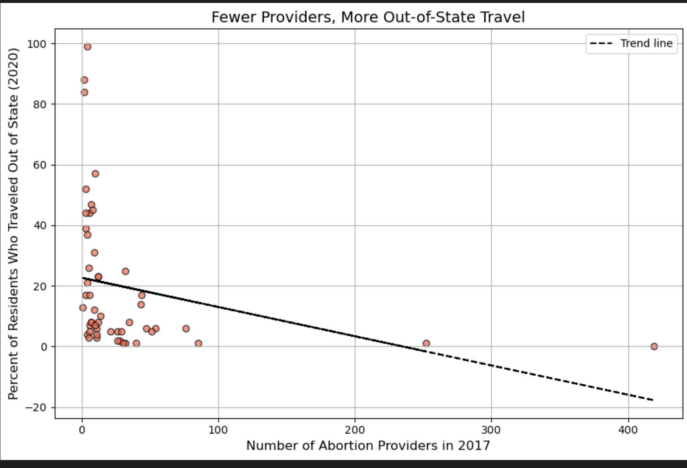
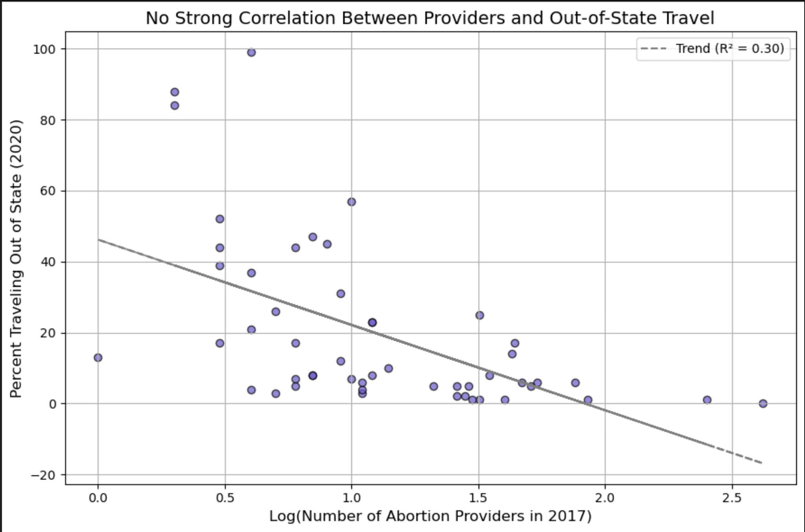

Proposition: States with fewer abortion providers have higher rates of out-of-state abortion travel.
FOR the Proposition

Design Decisions and Rationale:
- Title Framing (Score: 1) – The title “Fewer Providers, More Out-of-State Travel” clearly reflects the relationship shown in the data without exaggeration. It asserts a pattern while leaving room for interpretation, making it a persuasive but fair framing choice. I chose the title “Fewer Providers, More Out-of-State Travel” because it directly reflects the trend in the data while still being factually grounded. It helps guide the viewer’s interpretation without making an unfounded causal claim. I considered using a more neutral title like “Provider Count vs. Travel Rate,” but felt that the current version was more engaging while still honest.
- Use of Raw Provider Counts (Score: 0.5) – While provider counts are not normalized per capita, they still give a reasonable estimate of availability, especially since many states have small total counts. Using raw numbers avoids added assumptions, making this choice mostly earnest. I opted to use the absolute number of abortion providers in each state rather than normalizing by population. While not population-adjusted, this approach avoids introducing additional assumptions and makes the chart more intuitive to a general audience. I considered using providers per capita but felt that the raw count already strongly indicated access disparities without complicating the visualization.
- Inclusion of a Trend Line (Score: 2) – The dashed regression line adds clarity and guides the viewer toward interpreting the overall negative correlation. This is a transparent, helpful visual aid that supports comprehension without introducing bias.
AGAINST the Proposition

Design Decisions and Rationale:
-
Use of Logarithmic Scale on the X-Axis (Score: -0.5)
Applying a log scale flattens the spread of data, minimizing the impact of outliers and visually compressing any clear trend. This makes the scatter appear more evenly distributed and less suggestive of a strong correlation. While log-scaling is a valid transformation, using it here strategically softens the slope of the trendline and supports the opposing argument. -
Displaying the R² Value (Score: 1.5)
Including the R² value (0.30) gives the impression of statistical objectivity and reinforces the idea that provider count alone isn’t a strong predictor of travel. While R² doesn't mean "no relationship," it gives viewers a number that feels definitive—helping steer interpretation away from visible patterns. -
Framing Title to Undercut the Trend (Score: -1)
The title, “No Strong Correlation Between Providers and Out-of-State Travel,” leads the viewer to an interpretation before they've engaged with the data. While not technically false, it front-loads a narrative that may bias their reading of the chart. I considered a more neutral title, but chose this phrasing to subtly push against the proposition.
Final Reflection
Working on this project was both fun and a little tricky. Making visualizations to support my proposition was pretty straightforward once I saw clear patterns in the data. But creating visualizations to argue against the proposition was more challenging. I had to be more thoughtful with how I framed things, like using a log scale or showing exceptions, to make the viewer question the connection. I was surprised by how small design choices—like a title or how the data is scaled—can really change how people understand a chart, even though the data doesn’t change.
This project helped me think differently about what it means to be ethical when visualizing data. I realized it’s not just about being accurate, but also about how the story is told through design. A chart can be technically correct but still feel misleading if it hides important context or pushes one interpretation too hard. To me, ethical visualizations are honest about how the data was changed or framed, and let the viewer think critically about what they’re seeing.
The line between being persuasive and being misleading can be blurry. I think it’s okay to make strong design choices to tell a story, as long as you’re not hiding or twisting the facts. If someone asked, “Is this fair?”, I should be able to say yes. This project showed me that good visualizations can be persuasive without crossing the line—and that walking that line takes real thought and responsibility.